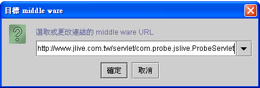
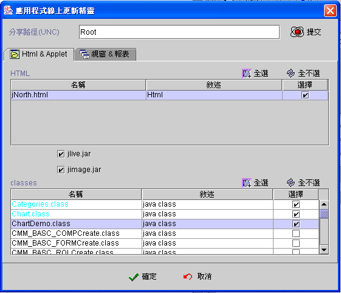
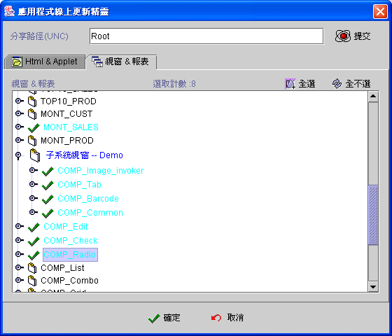
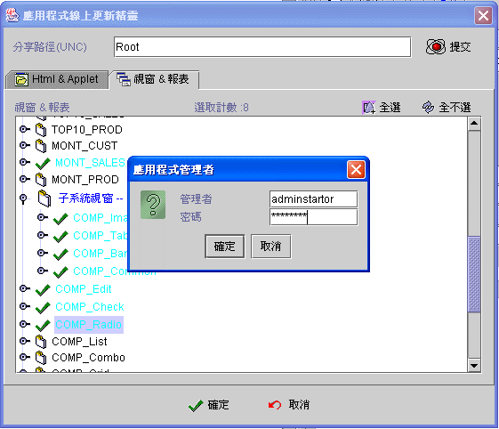

|
4.3 工具 (tool) 應用程式線上更新 (application online update)
jLIVE
Builder™ 提供應用程式模組輸出 (export)、輸入 (import) 及線上更新
(online update)
等應用程式的保存、載入及維護方式。應用程式輸出 (export)
是將該專案應用程式的所有資源 (resource)，包括所有設定、
XML、圖檔、原始程式碼等等，壓縮 (jar) 成保存檔 (*.jlv)。利用應用程式輸入(import) ，可以將整個專案應用程式的所有資源
(resources)，載入到任何其他的 jLIVE
Builder™ 作業平台。 應用程式線上更新 (application online update) 是 jLIVE Builder™ 特有的功能，也是最方便、最有效率的程式維護、更新機制。jLIVE Builder™ 所開發的應用程式是分散性的程式模組 (distributed runtime module)，集中於 Web 主機，當應用程式有任何的修改，甚至只是簡單的畫面元件位移，過去的主從架構 (client/server) 或非分散性程式模組，需要重新編譯 (compile) 整個應用程式成 *.exe 檔，再將 *.exe 檔下載至每一個客戶端 (client)，jLIVE Builder™ 由於是分散性的程式模組 (distributed runtime module)，只要編譯 (compile) 更新或新增的視窗即可，再透過應用程式線上更新 (application online update) 將該視窗上載 (upload) 至 Web 中即可，每個客戶端 (client) 在參照到該視窗模組時即會自行下載更新。
當應用程式已經佈建 (deploy) 完成之後，只要有網際網路連線就可以利用此功能更新程式。 使用線上更新功能必須先將程式所在的資料夾分享權限給 jLIVE™ middle ware 所在的主機，如下圖的分享路徑為 Root。 按選【線上更新】後，系統會詢問目標 jLIVE™ middle ware 所在的 URL，使用者可以選取已存在的 URL 或自行輸入。每次線上更新成功傳輸後，系統會自動記錄該次所使用的 URL 及 分享路徑，再次使用線上更新時，即可自選單中直接選取。




Copyright © 2001~ 2004 Probe Technology . All Rights Reserved. Questions, comments, and suggestions to Service@probe.com.tw |